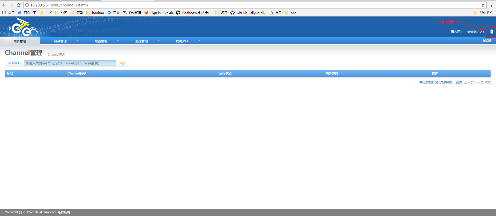
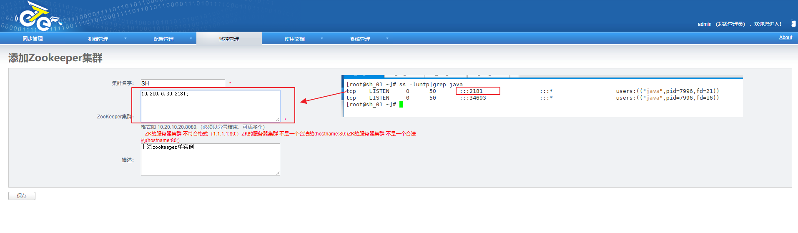
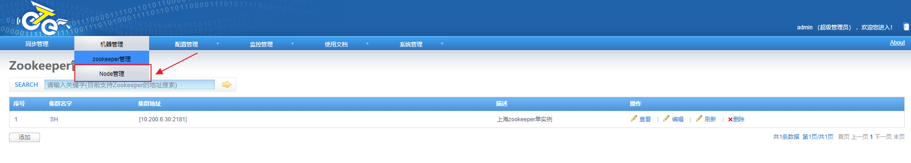
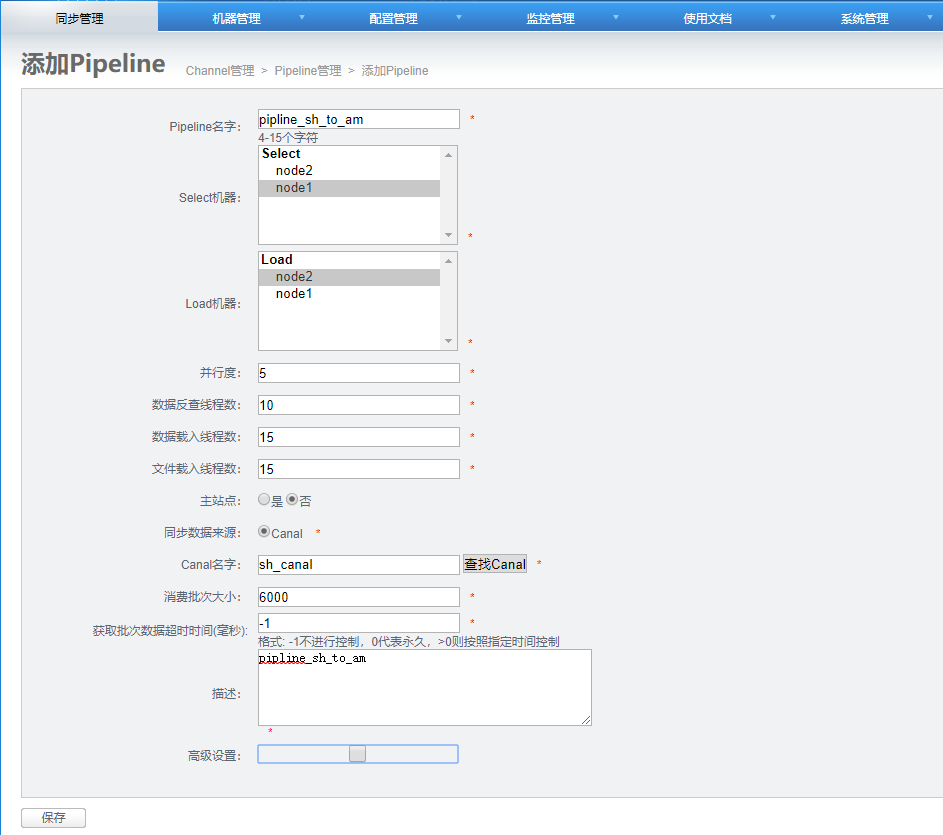
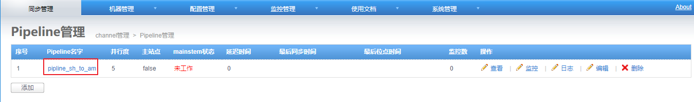

mkdir /alidata/manager tar zxvf manager.deployer-$version.tar.gz -C /alidata/manager
**4. 配置修改 **
## otter manager domain name #修改为正确访问ip，生成URL使用 otter.domainName = 127.0.0.1 ## otter manager http port otter.port = 8080 ## jetty web config xml otter.jetty = jetty.xml #otter manager database config ，修改为正确数据库信息 otter.database.driver.class.name = com.mysql.jdbc.Driver otter.database.driver.url = jdbc:mysql://127.0.01:3306/ottermanager otter.database.driver.username = root otter.database.driver.password = hello #otter communication port otter.communication.manager.port = 1099 #otter communication pool size otter.communication.pool.size = 10 #default zookeeper address，修改为正确的地址，手动选择一个地域就近的zookeeper集群列表 otter.zookeeper.cluster.default = 127.0.0.1:2181 #default zookeeper session timeout = 90s otter.zookeeper.sessionTimeout = 90000 #otter arbitrate connect manager config otter.manager.address = ${otter.domainName}:${otter.communication.manager.port}
5. 准备启动
sh startup.sh
6. 查看日志
vi logs/manager.log
2013-08-14 13:19:45.911 [] WARN com.alibaba.otter.manager.deployer.JettyEmbedServer - ##Jetty Embed Server is startup! 2013-08-14 13:19:45.911 [] WARN com.alibaba.otter.manager.deployer.OtterManagerLauncher - ## the manager server is running now ......
b. canal的原理是模拟自己为mysql slave，所以这里一定需要做为mysql slave的相关权限.
CREATE USER canal IDENTIFIED BY 'canal'; GRANT SELECT, REPLICATION SLAVE, REPLICATION CLIENT ON *.* TO 'canal'@'%'; -- GRANT ALL PRIVILEGES ON *.* TO 'canal'@'%' ; FLUSH PRIVILEGES;
2013-02-05 22:45:27.967 [main] INFO com.alibaba.otter.canal.deployer.CanalLauncher - ## start the canal server. 2013-02-05 22:45:28.113 [main] INFO com.alibaba.otter.canal.deployer.CanalController - ## start the canal server[10.1.29.120:11111] 2013-02-05 22:45:28.210 [main] INFO com.alibaba.otter.canal.deployer.CanalLauncher - ## the canal server is running now ......
具体instance的日志：
vi logs/example/example.log
2013-02-05 22:50:45.636 [main] INFO c.a.o.c.i.spring.support.PropertyPlaceholderConfigurer - Loading properties file from class path resource [canal.properties] 2013-02-05 22:50:45.641 [main] INFO c.a.o.c.i.spring.support.PropertyPlaceholderConfigurer - Loading properties file from class path resource [example/instance.properties] 2013-02-05 22:50:45.803 [main] INFO c.a.otter.canal.instance.spring.CanalInstanceWithSpring - start CannalInstance for 1-example 2013-02-05 22:50:45.810 [main] INFO c.a.otter.canal.instance.spring.CanalInstanceWithSpring - start successful....
Exception in thread "main" java.lang.IllegalArgumentException: node[1] ip[127.0.0.1] port[2088] , but your host ip[10.12.48.215] is not matched! at com.alibaba.otter.node.etl.OtterController.checkNidVaild(OtterController.java:245) at com.alibaba.otter.node.etl.OtterController.initNid(OtterController.java:230) at com.alibaba.otter.node.etl.OtterController.start(OtterController.java:73) at com.alibaba.otter.node.deployer.OtterLauncher.main(OtterLauncher.java:25)
此时修改ip为对应的host ip后，再次启动即可。
vi logs/node/node.log
2013-08-14 15:42:16.886 [main] INFO com.alibaba.otter.node.deployer.OtterLauncher - INFO ## the otter server is running now ......
官方表示otter-manager连接的数据库要求mysql5.6，只需要修改脚本中与mysql5.7不兼容给的地方，例如timestamp not null default 00-00-00 00:00:00 改为 timestamp not null DEFAULT CURRENT_TIMESTAMP
SH_02
作为上海机房的otter-manager和otter-node1
[root@sh_02 ~]# wget https://github.com/alibaba/otter/releases/download/otter-4.2.16-preview-1/manager.deployer-4.2.16-SNAPSHOT.tar.gz [root@sh_02 ~]# mkdir /alidata/manager [root@sh_02 ~]# tar -xf manager.deployer-4.2.16-SNAPSHOT.tar.gz -C /alidata/manager/ [root@sh_02 ~]# cd /alidata/manager/ [root@sh_02 manager]# ll total 8 drwxr-xr-x. 2 root root 58 Jun 14 11:44 bin drwxr-xr-x. 2 root root 66 Jun 14 11:44 conf drwxr-xr-x. 2 root root 4096 Jun 14 11:44 lib drwxr-xr-x. 8 root root 89 Jun 14 11:44 webapp
[root@sh_02 manager]# vim conf/otter.properties ## otter manager domain name otter.domainName = 10.200.6.31 ## otter manager http port otter.port = 8080 ## jetty web config xml otter.jetty = jetty.xml ## otter manager database config otter.database.driver.class.name = com.mysql.jdbc.Driver otter.database.driver.url = jdbc:mysql://10.200.6.30:3306/otter otter.database.driver.username = otter otter.database.driver.password = uplooking ## otter communication port otter.communication.manager.port = 1099 ## otter communication payload size (default = 8388608) otter.communication.payload = 8388608 ## otter communication pool size otter.communication.pool.size = 10 ## default zookeeper address otter.zookeeper.cluster.default = 10.200.6.30:2181 ## default zookeeper sesstion timeout = 60s otter.zookeeper.sessionTimeout = 60000 ## otter arbitrate connect manager config otter.manager.address = ${otter.domainName}:${otter.communication.manager.port} ## should run in product mode , true/false otter.manager.productionMode = true ## self-monitor enable or disable otter.manager.monitor.self.enable = true ## self-montir interval , default 120s otter.manager.monitor.self.interval = 120 ## auto-recovery paused enable or disable otter.manager.monitor.recovery.paused = true # manager email user config otter.manager.monitor.email.host = smtp.gmail.com otter.manager.monitor.email.username = otter.manager.monitor.email.password = otter.manager.monitor.email.stmp.port = 465 [root@sh_02 manager]# systemctl stop firewalld;setenforce 0 [root@sh_02 manager]# bin/startup.sh cd to /alidata/manager/bin for workaround relative path LOG CONFIGURATION : /alidata/manager/bin/../conf/logback.xml otter conf : /alidata/manager/bin/../conf/otter.properties CLASSPATH :/alidata/manager/bin/..:/alidata/manager/bin/../conf:/alidata/manager/bin/../lib/zookeeper-3.4.5.jar:/alidata/manager/bin/../lib/zkclient-0.10.jar:/alidata/manager/bin/../lib/velocity-1.7.jar:/alidata/manager/bin/../lib/spring-webmvc-3.1.2.RELEASE.jar:/alidata/manager/bin/../lib/spring-web-3.1.2.RELEASE.jar:/alidata/manager/bin/../lib/spring-tx-3.1.2.RELEASE.jar:/alidata/manager/bin/../lib/spring-test-3.1.2.RELEASE.jar:/alidata/manager/bin/../lib/spring-orm-3.1.2.RELEASE.jar:/alidata/manager/bin/../lib/spring-jdbc-3.1.2.RELEASE.jar:/alidata/manager/bin/../lib/spring-expression-3.1.2.RELEASE.jar:/alidata/manager/bin/../lib/spring-core-3.1.2.RELEASE.jar:/alidata/manager/bin/../lib/spring-context-support-3.1.2.RELEASE.jar:/alidata/manager/bin/../lib/spring-context-3.1.2.RELEASE.jar:/alidata/manager/bin/../lib/spring-beans-3.1.2.RELEASE.jar:/alidata/manager/bin/../lib/spring-asm-3.1.2.RELEASE.jar:/alidata/manager/bin/../lib/spring-aop-3.1.2.RELEASE.jar:/alidata/manager/bin/../lib/slf4j-api-1.7.12.jar:/alidata/manager/bin/../lib/shared.push-4.2.16-SNAPSHOT.jar:/alidata/manager/bin/../lib/shared.communication-4.2.16-SNAPSHOT.jar:/alidata/manager/bin/../lib/shared.common-4.2.16-SNAPSHOT.jar:/alidata/manager/bin/../lib/shared.arbitrate-4.2.16-SNAPSHOT.jar:/alidata/manager/bin/../lib/protobuf-java-2.6.1.jar:/alidata/manager/bin/../lib/oro-2.0.8.jar:/alidata/manager/bin/../lib/ojdbc6.jar:/alidata/manager/bin/../lib/ojdbc6-11.1.0.7.0.jar:/alidata/manager/bin/../lib/netty-all-4.1.6.Final.jar:/alidata/manager/bin/../lib/netty-3.2.2.Final.jar:/alidata/manager/bin/../lib/mysql-connector-java-5.1.40.jar:/alidata/manager/bin/../lib/manager.web-4.2.16-SNAPSHOT.jar:/alidata/manager/bin/../lib/manager.deployer-4.2.16-SNAPSHOT.jar:/alidata/manager/bin/../lib/manager.biz-4.2.16-SNAPSHOT.jar:/alidata/manager/bin/../lib/mail-1.4.7.jar:/alidata/manager/bin/../lib/logback-core-1.1.3.jar:/alidata/manager/bin/../lib/logback-classic-1.1.3.jar:/alidata/manager/bin/../lib/jopt-simple-4.6.jar:/alidata/manager/bin/../lib/jmh-core-1.21.jar:/alidata/manager/bin/../lib/jetty-xml-8.1.7.v20120910.jar:/alidata/manager/bin/../lib/jetty-webapp-8.1.7.v20120910.jar:/alidata/manager/bin/../lib/jetty-util-8.1.7.v20120910.jar:/alidata/manager/bin/../lib/jetty-servlet-8.1.7.v20120910.jar:/alidata/manager/bin/../lib/jetty-server-8.1.7.v20120910.jar:/alidata/manager/bin/../lib/jetty-security-8.1.7.v20120910.jar:/alidata/manager/bin/../lib/jetty-io-8.1.7.v20120910.jar:/alidata/manager/bin/../lib/jetty-http-8.1.7.v20120910.jar:/alidata/manager/bin/../lib/jetty-continuation-8.1.7.v20120910.jar:/alidata/manager/bin/../lib/jcl-over-slf4j-1.7.12.jar:/alidata/manager/bin/../lib/javax.servlet-3.0.0.v201112011016.jar:/alidata/manager/bin/../lib/javassist-3.15.0-GA.jar:/alidata/manager/bin/../lib/ibatis-sqlmap-2.3.4.726.jar:/alidata/manager/bin/../lib/httpcore-4.4.3.jar:/alidata/manager/bin/../lib/httpclient-4.5.1.jar:/alidata/manager/bin/../lib/h2-1.4.196.jar:/alidata/manager/bin/../lib/guava-18.0.jar:/alidata/manager/bin/../lib/fastsql-2.0.0_preview_366.jar:/alidata/manager/bin/../lib/fastjson-1.2.28.jar:/alidata/manager/bin/../lib/ecs-1.4.2.jar:/alidata/manager/bin/../lib/dwr-2.0.10.jar:/alidata/manager/bin/../lib/dubbo-2.5.3.jar:/alidata/manager/bin/../lib/druid-1.1.9.jar:/alidata/manager/bin/../lib/dom4j-1.6.1.jar:/alidata/manager/bin/../lib/ddlutils-1.0.jar:/alidata/manager/bin/../lib/commons-pool-1.5.4.jar:/alidata/manager/bin/../lib/commons-math3-3.2.jar:/alidata/manager/bin/../lib/commons-logging-1.1.1.jar:/alidata/manager/bin/../lib/commons-lang-2.6.jar:/alidata/manager/bin/../lib/commons-jexl-2.1.1.jar:/alidata/manager/bin/../lib/commons-io-2.4.jar:/alidata/manager/bin/../lib/commons-fileupload-1.2.2.jar:/alidata/manager/bin/../lib/commons-dbcp-1.4.jar:/alidata/manager/bin/../lib/commons-compress-1.9.jar:/alidata/manager/bin/../lib/commons-collections-3.2.2.jar:/alidata/manager/bin/../lib/commons-codec-1.9.jar:/alidata/manager/bin/../lib/commons-beanutils-1.8.3.jar:/alidata/manager/bin/../lib/citrus-webx-all-3.2.0.jar:/alidata/manager/bin/../lib/cglib-nodep-2.2.jar:/alidata/manager/bin/../lib/canal.store-1.0.26-SNAPSHOT.jar:/alidata/manager/bin/../lib/canal.sink-1.0.26-SNAPSHOT.jar:/alidata/manager/bin/../lib/canal.protocol-1.0.26-SNAPSHOT.jar:/alidata/manager/bin/../lib/canal.parse.driver-1.0.26-SNAPSHOT.jar:/alidata/manager/bin/../lib/canal.parse.dbsync-1.0.26-SNAPSHOT.jar:/alidata/manager/bin/../lib/canal.parse-1.0.26-SNAPSHOT.jar:/alidata/manager/bin/../lib/canal.meta-1.0.26-SNAPSHOT.jar:/alidata/manager/bin/../lib/canal.instance.manager-1.0.26-SNAPSHOT.jar:/alidata/manager/bin/../lib/canal.instance.core-1.0.26-SNAPSHOT.jar:/alidata/manager/bin/../lib/canal.filter-1.0.26-SNAPSHOT.jar:/alidata/manager/bin/../lib/canal.common-1.0.26-SNAPSHOT.jar:/alidata/manager/bin/../lib/aviator-2.2.1.jar:/alidata/manager/bin/../lib/aopalliance-1.0.jar:/alidata/manager/bin/../lib/annotations-9.0.4.jar:/alidata/manager/bin/../lib/activation-1.1.jar:.:/alidata/java/lib/dt.jar:/alidata/java/lib/tools.jar:/alidata/java/lib:/alidata/java/jre/lib: cd to /alidata/manager for continue
[root@sh_02 manager]# cat logs/manager.log 2018-06-14 11:47:17.982 [] INFO com.alibaba.otter.manager.deployer.OtterManagerLauncher - ## start the manager server. Thu Jun 14 11:47:24 CST 2018 WARN: Establishing SSL connection without server's identity verification is not recommended. According to MySQL 5.5.45+, 5.6.26+ and 5.7.6+ requirements SSL connection must be established by default if explicit option isn't set. For compliance with existing applications not using SSL the verifyServerCertificate property is set to 'false'. You need either to explicitly disable SSL by setting useSSL=false, or set useSSL=true and provide truststore for server certificate verification. 2018-06-14 11:47:26.046 [] INFO com.alibaba.otter.manager.deployer.JettyEmbedServer - ##Jetty Embed Server is startup! 2018-06-14 11:47:26.046 [] INFO com.alibaba.otter.manager.deployer.OtterManagerLauncher - ## the manager server is running now ......
通过8080端口访问otter-manager的web界面；

默认admin用户密码为admin；
添加zookeeper管理节点；
点击添加
到sh_01中查看zookeeper的监听端口为2181，注意格式ip:port;分号少了就会报错

可以查看到zookeeper管理节点已经添加好了
开始添加node1

点击添加按钮
输入node1的相关参数
查看到当前node1节点还没有启动，因为我们还没有安装otter-node节点
同样的再添加一个node2，node2会部署在美国的AM_02上面。
开始安装otter-node1
# 安装aria2 [root@sh_02 ~]# yum install -y gcc-c++ [root@sh_02 ~]# wget https://sourceforge.net/projects/aria2/files/stable/aria2-1.19.0/aria2-1.19.0.tar.gz/download -O aria2-1.19.0.tar.gz [root@sh_02 ~]# tar -xf aria2-1.19.0.tar.gz -C /alidata/ [root@sh_02 ~]# cd /alidata/aria2-1.19.0/ [root@sh_02 aria2-1.19.0]# make && make install # 安装canal # sh_01上对数据库添加授权 > GRANT SELECT, REPLICATION SLAVE, REPLICATION CLIENT ON *.* TO 'canal'@'%' identified by '(Uploo00king)'; > flush privileges;
[root@sh_02 ~]# wget https://github.com/alibaba/canal/releases/download/canal-1.0.26-preview-3/canal.deployer-1.0.26-SNAPSHOT.tar.gz [root@sh_02 ~]# mkdir /alidata/canal [root@sh_02 ~]# tar -xf canal.deployer-1.0.26-SNAPSHOT.tar.gz -C /alidata/canal/ [root@sh_02 ~]# cd /alidata/canal/ [root@sh_02 canal]# ll total 4 drwxr-xr-x. 2 root root 58 Jun 14 14:50 bin drwxr-xr-x. 4 root root 78 Jun 14 14:50 conf drwxr-xr-x. 2 root root 4096 Jun 14 14:50 lib drwxrwxrwx. 2 root root 6 Jun 12 13:52 logs [root@sh_02 canal]# vim conf/example/instance.properties ################################################# ## mysql serverId canal.instance.mysql.slaveId=0 # position info # 源数据库的ip:port canal.instance.master.address=10.200.6.30:3306 # enable gtid use true/false canal.instance.gtidon=false canal.instance.master.journal.name= canal.instance.master.position= canal.instance.master.timestamp= canal.instance.master.gtid= # table meta tsdb info canal.instance.tsdb.enable=true canal.instance.tsdb.dir=${canal.file.data.dir:../conf}/${canal.instance.destination:} canal.instance.tsdb.url=jdbc:h2:${canal.instance.tsdb.dir}/h2;CACHE_SIZE=1000;MODE=MYSQL; #canal.instance.tsdb.url=jdbc:mysql://10.200.6.30:3306/canal_tsdb canal.instance.tsdb.dbUsername= canal.instance.tsdb.dbPassword= #canal.instance.standby.address = #canal.instance.standby.journal.name = #canal.instance.standby.position = #canal.instance.standby.timestamp = #canal.instance.standby.gtid= # username/password # 数据库的用户名和密码 canal.instance.dbUsername=canal canal.instance.dbPassword=(Uploo00king) canal.instance.defaultDatabaseName=mysql canal.instance.connectionCharset=UTF-8 # table regex canal.instance.filter.regex=.*\\..* # table black regex canal.instance.filter.black.regex= #################################################
[root@sh_02 canal]# bin/startup.sh cd to /alidata/canal/bin for workaround relative path LOG CONFIGURATION : /alidata/canal/bin/../conf/logback.xml canal conf : /alidata/canal/bin/../conf/canal.properties CLASSPATH :/alidata/canal/bin/../conf:/alidata/canal/bin/../lib/zookeeper-3.4.5.jar:/alidata/canal/bin/../lib/zkclient-0.10.jar:/alidata/canal/bin/../lib/spring-tx-3.2.9.RELEASE.jar:/alidata/canal/bin/../lib/spring-orm-3.2.9.RELEASE.jar:/alidata/canal/bin/../lib/spring-jdbc-3.2.9.RELEASE.jar:/alidata/canal/bin/../lib/spring-expression-3.2.9.RELEASE.jar:/alidata/canal/bin/../lib/spring-core-3.2.9.RELEASE.jar:/alidata/canal/bin/../lib/spring-context-3.2.9.RELEASE.jar:/alidata/canal/bin/../lib/spring-beans-3.2.9.RELEASE.jar:/alidata/canal/bin/../lib/spring-aop-3.2.9.RELEASE.jar:/alidata/canal/bin/../lib/slf4j-api-1.7.12.jar:/alidata/canal/bin/../lib/protobuf-java-2.6.1.jar:/alidata/canal/bin/../lib/oro-2.0.8.jar:/alidata/canal/bin/../lib/netty-all-4.1.6.Final.jar:/alidata/canal/bin/../lib/netty-3.2.2.Final.jar:/alidata/canal/bin/../lib/mysql-connector-java-5.1.40.jar:/alidata/canal/bin/../lib/logback-core-1.1.3.jar:/alidata/canal/bin/../lib/logback-classic-1.1.3.jar:/alidata/canal/bin/../lib/jopt-simple-4.6.jar:/alidata/canal/bin/../lib/jmh-core-1.21.jar:/alidata/canal/bin/../lib/jcl-over-slf4j-1.7.12.jar:/alidata/canal/bin/../lib/ibatis-sqlmap-2.3.4.726.jar:/alidata/canal/bin/../lib/httpcore-4.4.3.jar:/alidata/canal/bin/../lib/httpclient-4.5.1.jar:/alidata/canal/bin/../lib/h2-1.4.196.jar:/alidata/canal/bin/../lib/guava-18.0.jar:/alidata/canal/bin/../lib/fastsql-2.0.0_preview_371.jar:/alidata/canal/bin/../lib/fastjson-1.2.28.jar:/alidata/canal/bin/../lib/druid-1.1.9.jar:/alidata/canal/bin/../lib/commons-math3-3.2.jar:/alidata/canal/bin/../lib/commons-logging-1.1.3.jar:/alidata/canal/bin/../lib/commons-lang-2.6.jar:/alidata/canal/bin/../lib/commons-io-2.4.jar:/alidata/canal/bin/../lib/commons-compress-1.9.jar:/alidata/canal/bin/../lib/commons-codec-1.9.jar:/alidata/canal/bin/../lib/commons-beanutils-1.8.2.jar:/alidata/canal/bin/../lib/canal.store-1.0.26-SNAPSHOT.jar:/alidata/canal/bin/../lib/canal.sink-1.0.26-SNAPSHOT.jar:/alidata/canal/bin/../lib/canal.server-1.0.26-SNAPSHOT.jar:/alidata/canal/bin/../lib/canal.protocol-1.0.26-SNAPSHOT.jar:/alidata/canal/bin/../lib/canal.parse.driver-1.0.26-SNAPSHOT.jar:/alidata/canal/bin/../lib/canal.parse.dbsync-1.0.26-SNAPSHOT.jar:/alidata/canal/bin/../lib/canal.parse-1.0.26-SNAPSHOT.jar:/alidata/canal/bin/../lib/canal.meta-1.0.26-SNAPSHOT.jar:/alidata/canal/bin/../lib/canal.instance.spring-1.0.26-SNAPSHOT.jar:/alidata/canal/bin/../lib/canal.instance.manager-1.0.26-SNAPSHOT.jar:/alidata/canal/bin/../lib/canal.instance.core-1.0.26-SNAPSHOT.jar:/alidata/canal/bin/../lib/canal.filter-1.0.26-SNAPSHOT.jar:/alidata/canal/bin/../lib/canal.deployer-1.0.26-SNAPSHOT.jar:/alidata/canal/bin/../lib/canal.common-1.0.26-SNAPSHOT.jar:/alidata/canal/bin/../lib/aviator-2.2.1.jar:/alidata/canal/bin/../lib/aopalliance-1.0.jar:.:/alidata/java/lib/dt.jar:/alidata/java/lib/tools.jar:/alidata/java/lib:/alidata/java/jre/lib: cd to /alidata/canal for continue
[root@sh_02 canal]# cat logs/canal/canal.log 2018-06-27 10:11:16.749 [main] INFO com.alibaba.otter.canal.deployer.CanalLauncher - ## set default uncaught exception handler 2018-06-27 10:11:16.845 [main] INFO com.alibaba.otter.canal.deployer.CanalLauncher - ## load canal configurations 2018-06-27 10:11:16.846 [main] INFO com.alibaba.otter.canal.deployer.CanalLauncher - ## start the canal server. 2018-06-27 10:11:16.906 [main] INFO com.alibaba.otter.canal.deployer.CanalController - ## start the canal server[10.200.6.31:11111] 2018-06-27 10:11:58.956 [main] INFO com.alibaba.otter.canal.deployer.CanalLauncher - ## the canal server is running now ...... # 日志中没有报错说明启动成功 # 安装otter-node [root@sh_02 ~]# wget https://github.com/alibaba/otter/releases/download/otter-4.2.16-preview-1/node.deployer-4.2.16-SNAPSHOT.tar.gz [root@sh_02 ~]# mkdir /alidata/node [root@sh_02 ~]# tar -xf node.deployer-4.2.16-SNAPSHOT.tar.gz -C /alidata/node/ [root@sh_02 ~]# cd /alidata/node/ [root@sh_02 node]# echo 1 > conf/nid [root@sh_02 node]# vim conf/otter.properties [root@sh_02 node]# cat conf/otter.properties # otter node root dir otter.nodeHome = ${user.dir}/../ ## otter node dir otter.htdocs.dir = ${otter.nodeHome}/htdocs otter.download.dir = ${otter.nodeHome}/download otter.extend.dir= ${otter.nodeHome}/extend ## default zookeeper sesstion timeout = 60s otter.zookeeper.sessionTimeout = 60000 ## otter communication payload size (default = 8388608) otter.communication.payload = 8388608 ## otter communication pool size otter.communication.pool.size = 10 ## otter arbitrate & node connect manager config otter.manager.address = 10.200.6.31:1099
[root@sh_02 node]# bash bin/startup.sh LOG CONFIGURATION : /alidata/node/bin/../conf/logback.xml Otter nodeId file : /alidata/node/bin/../conf/nid CLASSPATH :/alidata/node/bin/../conf:/alidata/node/bin/../lib/zookeeper-3.4.5.jar:/alidata/node/bin/../lib/zkclient-0.10.jar:/alidata/node/bin/../lib/xz-1.0.jar:/alidata/node/bin/../lib/truezip-6.8.4.jar:/alidata/node/bin/../lib/spring-tx-3.1.2.RELEASE.jar:/alidata/node/bin/../lib/spring-test-3.1.2.RELEASE.jar:/alidata/node/bin/../lib/spring-orm-3.2.9.RELEASE.jar:/alidata/node/bin/../lib/spring-jdbc-3.1.2.RELEASE.jar:/alidata/node/bin/../lib/spring-expression-3.1.2.RELEASE.jar:/alidata/node/bin/../lib/spring-core-3.1.2.RELEASE.jar:/alidata/node/bin/../lib/spring-context-support-3.1.2.RELEASE.jar:/alidata/node/bin/../lib/spring-context-3.1.2.RELEASE.jar:/alidata/node/bin/../lib/spring-beans-3.1.2.RELEASE.jar:/alidata/node/bin/../lib/spring-asm-3.1.2.RELEASE.jar:/alidata/node/bin/../lib/spring-aop-3.1.2.RELEASE.jar:/alidata/node/bin/../lib/slf4j-api-1.7.12.jar:/alidata/node/bin/../lib/shared.push-4.2.16-SNAPSHOT.jar:/alidata/node/bin/../lib/shared.etl-4.2.16-SNAPSHOT.jar:/alidata/node/bin/../lib/shared.communication-4.2.16-SNAPSHOT.jar:/alidata/node/bin/../lib/shared.common-4.2.16-SNAPSHOT.jar:/alidata/node/bin/../lib/shared.arbitrate-4.2.16-SNAPSHOT.jar:/alidata/node/bin/../lib/protobuf-java-2.6.1.jar:/alidata/node/bin/../lib/oro-2.0.8.jar:/alidata/node/bin/../lib/ojdbc6.jar:/alidata/node/bin/../lib/ojdbc6-11.1.0.7.0.jar:/alidata/node/bin/../lib/node.extend-4.2.16-SNAPSHOT.jar:/alidata/node/bin/../lib/node.etl-4.2.16-SNAPSHOT.jar:/alidata/node/bin/../lib/node.deployer-4.2.16-SNAPSHOT.jar:/alidata/node/bin/../lib/node.common-4.2.16-SNAPSHOT.jar:/alidata/node/bin/../lib/node.canal-4.2.16-SNAPSHOT.jar:/alidata/node/bin/../lib/netty-all-4.1.6.Final.jar:/alidata/node/bin/../lib/netty-3.2.2.Final.jar:/alidata/node/bin/../lib/mysql-connector-java-5.1.40.jar:/alidata/node/bin/../lib/logback-core-1.1.3.jar:/alidata/node/bin/../lib/logback-classic-1.1.3.jar:/alidata/node/bin/../lib/jopt-simple-4.6.jar:/alidata/node/bin/../lib/jmh-core-1.21.jar:/alidata/node/bin/../lib/jetty-xml-8.1.7.v20120910.jar:/alidata/node/bin/../lib/jetty-util-8.1.7.v20120910.jar:/alidata/node/bin/../lib/jetty-servlet-8.1.7.v20120910.jar:/alidata/node/bin/../lib/jetty-server-8.1.7.v20120910.jar:/alidata/node/bin/../lib/jetty-security-8.1.7.v20120910.jar:/alidata/node/bin/../lib/jetty-io-8.1.7.v20120910.jar:/alidata/node/bin/../lib/jetty-http-8.1.7.v20120910.jar:/alidata/node/bin/../lib/jetty-continuation-8.1.7.v20120910.jar:/alidata/node/bin/../lib/jcl-over-slf4j-1.7.12.jar:/alidata/node/bin/../lib/javax.servlet-3.0.0.v201112011016.jar:/alidata/node/bin/../lib/javassist-3.15.0-GA.jar:/alidata/node/bin/../lib/ibatis-sqlmap-2.3.4.726.jar:/alidata/node/bin/../lib/httpcore-4.4.3.jar:/alidata/node/bin/../lib/httpclient-4.5.1.jar:/alidata/node/bin/../lib/h2-1.4.196.jar:/alidata/node/bin/../lib/guava-18.0.jar:/alidata/node/bin/../lib/fastsql-2.0.0_preview_366.jar:/alidata/node/bin/../lib/fastjson-1.2.28.jar:/alidata/node/bin/../lib/dubbo-2.5.3.jar:/alidata/node/bin/../lib/druid-1.1.9.jar:/alidata/node/bin/../lib/ddlutils-1.0.jar:/alidata/node/bin/../lib/commons-pool-1.5.4.jar:/alidata/node/bin/../lib/commons-math3-3.2.jar:/alidata/node/bin/../lib/commons-logging-1.1.1.jar:/alidata/node/bin/../lib/commons-lang-2.6.jar:/alidata/node/bin/../lib/commons-io-2.4.jar:/alidata/node/bin/../lib/commons-dbcp-1.4.jar:/alidata/node/bin/../lib/commons-compress-1.4.1.jar:/alidata/node/bin/../lib/commons-collections-3.2.2.jar:/alidata/node/bin/../lib/commons-codec-1.9.jar:/alidata/node/bin/../lib/commons-beanutils-1.8.3.jar:/alidata/node/bin/../lib/cglib-nodep-2.2.jar:/alidata/node/bin/../lib/canal.store-1.0.26-SNAPSHOT.jar:/alidata/node/bin/../lib/canal.sink-1.0.26-SNAPSHOT.jar:/alidata/node/bin/../lib/canal.server-1.0.26-SNAPSHOT.jar:/alidata/node/bin/../lib/canal.protocol-1.0.26-SNAPSHOT.jar:/alidata/node/bin/../lib/canal.parse.driver-1.0.26-SNAPSHOT.jar:/alidata/node/bin/../lib/canal.parse.dbsync-1.0.26-SNAPSHOT.jar:/alidata/node/bin/../lib/canal.parse-1.0.26-SNAPSHOT.jar:/alidata/node/bin/../lib/canal.meta-1.0.26-SNAPSHOT.jar:/alidata/node/bin/../lib/canal.instance.spring-1.0.26-SNAPSHOT.jar:/alidata/node/bin/../lib/canal.instance.manager-1.0.26-SNAPSHOT.jar:/alidata/node/bin/../lib/canal.instance.core-1.0.26-SNAPSHOT.jar:/alidata/node/bin/../lib/canal.filter-1.0.26-SNAPSHOT.jar:/alidata/node/bin/../lib/canal.common-1.0.26-SNAPSHOT.jar:/alidata/node/bin/../lib/aviator-2.2.1.jar:/alidata/node/bin/../lib/aopalliance-1.0.jar:.:/alidata/java/lib/dt.jar:/alidata/java/lib/tools.jar:/alidata/java/lib:/alidata/java/jre/lib: cd to /alidata/node/bin for workaround relative path cd to /alidata/node for continue [root@sh_02 node]# cat logs/node/node.log 2018-06-14 15:22:58.305 [main] INFO com.alibaba.otter.node.deployer.OtterLauncher - INFO ## the otter server is running now ......
查看对应的节点状态，变为了已启动，代表已经正常启动。
AM _01
美国机房的MySQL生产库和zookeeper单实例
# 搭建步骤与SH_01一样 1. 安装mysql5.7 2. 安装zookeeper单实例 [root@am_01 ~]# bash mysql.sh [root@am_01 ~]# bash jdk.sh [root@am_01 ~]# bash zookeeper.sh [root@am_01 ~]# mysql_secure_installation [root@am_01 ~]# mysql -uroot -p'(Uploo00king)' mysql: [Warning] Using a password on the command line interface can be insecure. Welcome to the MySQL monitor. Commands end with ; or \g. Your MySQL connection id is 3 Server version: 5.7.17-log MySQL Community Server (GPL)
Copyright (c) 2000, 2016, Oracle and/or its affiliates. All rights reserved.
Oracle is a registered trademark of Oracle Corporation and/or its affiliates. Other names may be trademarks of their respective owners.
Type 'help;' or '\h' for help. Type '\c' to clear the current input statement.
root@AM_MySQL-01 10:34: [(none)]> show databases; +--------------------+ | Database | +--------------------+ | information_schema | | mysql | | performance_schema | | sys | +--------------------+ 4 rows in set (0.00 sec)
root@AM_MySQL-01 10:52: [booboo]> grant all on *.* to root@'%' identified by '(Uploo00king)' ; Query OK, 0 rows affected, 1 warning (0.01 sec)
# 安装aria2 [root@am_02 ~]# yum install -y gcc-c++ [root@am_02 ~]# wget https://sourceforge.net/projects/aria2/files/stable/aria2-1.19.0/aria2-1.19.0.tar.gz/download -O aria2-1.19.0.tar.gz [root@am_02 ~]# tar -xf aria2-1.19.0.tar.gz -C /alidata/ [root@am_02 ~]# cd /alidata/aria2-1.19.0/ [root@am_02 aria2-1.19.0]# make && make install # 安装canal # am_01上对数据库添加授权 > GRANT SELECT, REPLICATION SLAVE, REPLICATION CLIENT ON *.* TO 'canal'@'%' identified by '(Uploo00king)'; > flush privileges;
[root@am_02 ~]# wget https://github.com/alibaba/canal/releases/download/canal-1.0.26-preview-3/canal.deployer-1.0.26-SNAPSHOT.tar.gz [root@am_02 ~]# mkdir /alidata/canal [root@am_02 ~]# tar -xf canal.deployer-1.0.26-SNAPSHOT.tar.gz -C /alidata/canal/ [root@am_02 ~]# cd /alidata/canal/ [root@am_02 canal]# ll total 4 drwxr-xr-x. 2 root root 58 Jun 14 14:50 bin drwxr-xr-x. 4 root root 78 Jun 14 14:50 conf drwxr-xr-x. 2 root root 4096 Jun 14 14:50 lib drwxrwxrwx. 2 root root 6 Jun 12 13:52 logs [root@sh_02 canal]# vim conf/example/instance.properties ################################################# ## mysql serverId canal.instance.mysql.slaveId=0 # position info canal.instance.master.address=10.200.6.33:3306 # enable gtid use true/false canal.instance.gtidon=false canal.instance.master.journal.name= canal.instance.master.position= canal.instance.master.timestamp= canal.instance.master.gtid= # table meta tsdb info canal.instance.tsdb.enable=true canal.instance.tsdb.dir=${canal.file.data.dir:../conf}/${canal.instance.destination:} canal.instance.tsdb.url=jdbc:h2:${canal.instance.tsdb.dir}/h2;CACHE_SIZE=1000;MODE=MYSQL; #canal.instance.tsdb.url=jdbc:mysql://10.200.6.33:3306/mysql canal.instance.tsdb.dbUsername= canal.instance.tsdb.dbPassword= #canal.instance.standby.address = #canal.instance.standby.journal.name = #canal.instance.standby.position = #canal.instance.standby.timestamp = #canal.instance.standby.gtid= # username/password canal.instance.dbUsername=canal canal.instance.dbPassword=(Uploo00king) canal.instance.defaultDatabaseName=test canal.instance.connectionCharset=UTF-8 # table regex canal.instance.filter.regex=.*\\..* # table black regex canal.instance.filter.black.regex= ################################################# [root@am_02 canal]# bin/startup.sh cd to /alidata/canal/bin for workaround relative path LOG CONFIGURATION : /alidata/canal/bin/../conf/logback.xml canal conf : /alidata/canal/bin/../conf/canal.properties CLASSPATH :/alidata/canal/bin/../conf:/alidata/canal/bin/../lib/zookeeper-3.4.5.jar:/alidata/canal/bin/../lib/zkclient-0.10.jar:/alidata/canal/bin/../lib/spring-tx-3.2.9.RELEASE.jar:/alidata/canal/bin/../lib/spring-orm-3.2.9.RELEASE.jar:/alidata/canal/bin/../lib/spring-jdbc-3.2.9.RELEASE.jar:/alidata/canal/bin/../lib/spring-expression-3.2.9.RELEASE.jar:/alidata/canal/bin/../lib/spring-core-3.2.9.RELEASE.jar:/alidata/canal/bin/../lib/spring-context-3.2.9.RELEASE.jar:/alidata/canal/bin/../lib/spring-beans-3.2.9.RELEASE.jar:/alidata/canal/bin/../lib/spring-aop-3.2.9.RELEASE.jar:/alidata/canal/bin/../lib/slf4j-api-1.7.12.jar:/alidata/canal/bin/../lib/protobuf-java-2.6.1.jar:/alidata/canal/bin/../lib/oro-2.0.8.jar:/alidata/canal/bin/../lib/netty-all-4.1.6.Final.jar:/alidata/canal/bin/../lib/netty-3.2.2.Final.jar:/alidata/canal/bin/../lib/mysql-connector-java-5.1.40.jar:/alidata/canal/bin/../lib/logback-core-1.1.3.jar:/alidata/canal/bin/../lib/logback-classic-1.1.3.jar:/alidata/canal/bin/../lib/jopt-simple-4.6.jar:/alidata/canal/bin/../lib/jmh-core-1.21.jar:/alidata/canal/bin/../lib/jcl-over-slf4j-1.7.12.jar:/alidata/canal/bin/../lib/ibatis-sqlmap-2.3.4.726.jar:/alidata/canal/bin/../lib/httpcore-4.4.3.jar:/alidata/canal/bin/../lib/httpclient-4.5.1.jar:/alidata/canal/bin/../lib/h2-1.4.196.jar:/alidata/canal/bin/../lib/guava-18.0.jar:/alidata/canal/bin/../lib/fastsql-2.0.0_preview_371.jar:/alidata/canal/bin/../lib/fastjson-1.2.28.jar:/alidata/canal/bin/../lib/druid-1.1.9.jar:/alidata/canal/bin/../lib/commons-math3-3.2.jar:/alidata/canal/bin/../lib/commons-logging-1.1.3.jar:/alidata/canal/bin/../lib/commons-lang-2.6.jar:/alidata/canal/bin/../lib/commons-io-2.4.jar:/alidata/canal/bin/../lib/commons-compress-1.9.jar:/alidata/canal/bin/../lib/commons-codec-1.9.jar:/alidata/canal/bin/../lib/commons-beanutils-1.8.2.jar:/alidata/canal/bin/../lib/canal.store-1.0.26-SNAPSHOT.jar:/alidata/canal/bin/../lib/canal.sink-1.0.26-SNAPSHOT.jar:/alidata/canal/bin/../lib/canal.server-1.0.26-SNAPSHOT.jar:/alidata/canal/bin/../lib/canal.protocol-1.0.26-SNAPSHOT.jar:/alidata/canal/bin/../lib/canal.parse.driver-1.0.26-SNAPSHOT.jar:/alidata/canal/bin/../lib/canal.parse.dbsync-1.0.26-SNAPSHOT.jar:/alidata/canal/bin/../lib/canal.parse-1.0.26-SNAPSHOT.jar:/alidata/canal/bin/../lib/canal.meta-1.0.26-SNAPSHOT.jar:/alidata/canal/bin/../lib/canal.instance.spring-1.0.26-SNAPSHOT.jar:/alidata/canal/bin/../lib/canal.instance.manager-1.0.26-SNAPSHOT.jar:/alidata/canal/bin/../lib/canal.instance.core-1.0.26-SNAPSHOT.jar:/alidata/canal/bin/../lib/canal.filter-1.0.26-SNAPSHOT.jar:/alidata/canal/bin/../lib/canal.deployer-1.0.26-SNAPSHOT.jar:/alidata/canal/bin/../lib/canal.common-1.0.26-SNAPSHOT.jar:/alidata/canal/bin/../lib/aviator-2.2.1.jar:/alidata/canal/bin/../lib/aopalliance-1.0.jar:.:/alidata/java/lib/dt.jar:/alidata/java/lib/tools.jar:/alidata/java/lib:/alidata/java/jre/lib: cd to /alidata/canal for continue [root@am_02 canal]# cat logs/canal/canal.log [root@am_02 canal]# cat logs/canal/canal.log 2018-06-27 10:41:38.175 [main] INFO com.alibaba.otter.canal.deployer.CanalLauncher - ## set default uncaught exception handler 2018-06-27 10:41:38.218 [main] INFO com.alibaba.otter.canal.deployer.CanalLauncher - ## load canal configurations 2018-06-27 10:41:38.228 [main] INFO com.alibaba.otter.canal.deployer.CanalLauncher - ## start the canal server. 2018-06-27 10:41:38.276 [main] INFO com.alibaba.otter.canal.deployer.CanalController - ## start the canal server[10.200.6.32:11111] 2018-06-27 10:41:38.652 [main] WARN o.s.beans.GenericTypeAwarePropertyDescriptor - Invalid JavaBean property 'connectionCharset' being accessed! Ambiguous write methods found next to actually used [public void com.alibaba.otter.canal.parse.inbound.mysql.AbstractMysqlEventParser.setConnectionCharset(java.nio.charset.Charset)]: [public void com.alibaba.otter.canal.parse.inbound.mysql.AbstractMysqlEventParser.setConnectionCharset(java.lang.String)] 2018-06-27 10:41:38.856 [main] ERROR com.alibaba.druid.pool.DruidDataSource - testWhileIdle is true, validationQuery not set 2018-06-27 10:41:39.109 [main] INFO com.alibaba.otter.canal.deployer.CanalLauncher - ## the canal server is running now ...... 2018-06-27 10:41:39.125 [destination = example , address = /10.200.6.33:3306 , EventParser] WARN c.a.otter.canal.parse.inbound.mysql.MysqlEventParser - prepare to find start position just show master status # 安装otter-node [root@am_02 ~]# wget https://github.com/alibaba/otter/releases/download/otter-4.2.16-preview-1/node.deployer-4.2.16-SNAPSHOT.tar.gz [root@am_02 ~]# mkdir /alidata/node [root@am_02 ~]# tar -xf node.deployer-4.2.16-SNAPSHOT.tar.gz -C /alidata/node/ [root@am_02 ~]# cd /alidata/node/ # 非常重要，nid与将来在图形化界面控制台添加的node节点编号有关 [root@am_02 node]# echo 2 > conf/nid [root@am_02 node]# vim conf/otter.properties [root@am_02 node]# cat conf/otter.properties # otter node root dir otter.nodeHome = ${user.dir}/../ ## otter node dir otter.htdocs.dir = ${otter.nodeHome}/htdocs otter.download.dir = ${otter.nodeHome}/download otter.extend.dir= ${otter.nodeHome}/extend ## default zookeeper sesstion timeout = 60s otter.zookeeper.sessionTimeout = 60000 ## otter communication payload size (default = 8388608) otter.communication.payload = 8388608 ## otter communication pool size otter.communication.pool.size = 10 ## otter arbitrate & node connect manager config otter.manager.address = 10.200.6.31:1099
[root@am_02 node]# bash bin/startup.sh LOG CONFIGURATION : /alidata/node/bin/../conf/logback.xml Otter nodeId file : /alidata/node/bin/../conf/nid CLASSPATH :/alidata/node/bin/../conf:/alidata/node/bin/../lib/zookeeper-3.4.5.jar:/alidata/node/bin/../lib/zkclient-0.10.jar:/alidata/node/bin/../lib/xz-1.0.jar:/alidata/node/bin/../lib/truezip-6.8.4.jar:/alidata/node/bin/../lib/spring-tx-3.1.2.RELEASE.jar:/alidata/node/bin/../lib/spring-test-3.1.2.RELEASE.jar:/alidata/node/bin/../lib/spring-orm-3.2.9.RELEASE.jar:/alidata/node/bin/../lib/spring-jdbc-3.1.2.RELEASE.jar:/alidata/node/bin/../lib/spring-expression-3.1.2.RELEASE.jar:/alidata/node/bin/../lib/spring-core-3.1.2.RELEASE.jar:/alidata/node/bin/../lib/spring-context-support-3.1.2.RELEASE.jar:/alidata/node/bin/../lib/spring-context-3.1.2.RELEASE.jar:/alidata/node/bin/../lib/spring-beans-3.1.2.RELEASE.jar:/alidata/node/bin/../lib/spring-asm-3.1.2.RELEASE.jar:/alidata/node/bin/../lib/spring-aop-3.1.2.RELEASE.jar:/alidata/node/bin/../lib/slf4j-api-1.7.12.jar:/alidata/node/bin/../lib/shared.push-4.2.16-SNAPSHOT.jar:/alidata/node/bin/../lib/shared.etl-4.2.16-SNAPSHOT.jar:/alidata/node/bin/../lib/shared.communication-4.2.16-SNAPSHOT.jar:/alidata/node/bin/../lib/shared.common-4.2.16-SNAPSHOT.jar:/alidata/node/bin/../lib/shared.arbitrate-4.2.16-SNAPSHOT.jar:/alidata/node/bin/../lib/protobuf-java-2.6.1.jar:/alidata/node/bin/../lib/oro-2.0.8.jar:/alidata/node/bin/../lib/ojdbc6.jar:/alidata/node/bin/../lib/ojdbc6-11.1.0.7.0.jar:/alidata/node/bin/../lib/node.extend-4.2.16-SNAPSHOT.jar:/alidata/node/bin/../lib/node.etl-4.2.16-SNAPSHOT.jar:/alidata/node/bin/../lib/node.deployer-4.2.16-SNAPSHOT.jar:/alidata/node/bin/../lib/node.common-4.2.16-SNAPSHOT.jar:/alidata/node/bin/../lib/node.canal-4.2.16-SNAPSHOT.jar:/alidata/node/bin/../lib/netty-all-4.1.6.Final.jar:/alidata/node/bin/../lib/netty-3.2.2.Final.jar:/alidata/node/bin/../lib/mysql-connector-java-5.1.40.jar:/alidata/node/bin/../lib/logback-core-1.1.3.jar:/alidata/node/bin/../lib/logback-classic-1.1.3.jar:/alidata/node/bin/../lib/jopt-simple-4.6.jar:/alidata/node/bin/../lib/jmh-core-1.21.jar:/alidata/node/bin/../lib/jetty-xml-8.1.7.v20120910.jar:/alidata/node/bin/../lib/jetty-util-8.1.7.v20120910.jar:/alidata/node/bin/../lib/jetty-servlet-8.1.7.v20120910.jar:/alidata/node/bin/../lib/jetty-server-8.1.7.v20120910.jar:/alidata/node/bin/../lib/jetty-security-8.1.7.v20120910.jar:/alidata/node/bin/../lib/jetty-io-8.1.7.v20120910.jar:/alidata/node/bin/../lib/jetty-http-8.1.7.v20120910.jar:/alidata/node/bin/../lib/jetty-continuation-8.1.7.v20120910.jar:/alidata/node/bin/../lib/jcl-over-slf4j-1.7.12.jar:/alidata/node/bin/../lib/javax.servlet-3.0.0.v201112011016.jar:/alidata/node/bin/../lib/javassist-3.15.0-GA.jar:/alidata/node/bin/../lib/ibatis-sqlmap-2.3.4.726.jar:/alidata/node/bin/../lib/httpcore-4.4.3.jar:/alidata/node/bin/../lib/httpclient-4.5.1.jar:/alidata/node/bin/../lib/h2-1.4.196.jar:/alidata/node/bin/../lib/guava-18.0.jar:/alidata/node/bin/../lib/fastsql-2.0.0_preview_366.jar:/alidata/node/bin/../lib/fastjson-1.2.28.jar:/alidata/node/bin/../lib/dubbo-2.5.3.jar:/alidata/node/bin/../lib/druid-1.1.9.jar:/alidata/node/bin/../lib/ddlutils-1.0.jar:/alidata/node/bin/../lib/commons-pool-1.5.4.jar:/alidata/node/bin/../lib/commons-math3-3.2.jar:/alidata/node/bin/../lib/commons-logging-1.1.1.jar:/alidata/node/bin/../lib/commons-lang-2.6.jar:/alidata/node/bin/../lib/commons-io-2.4.jar:/alidata/node/bin/../lib/commons-dbcp-1.4.jar:/alidata/node/bin/../lib/commons-compress-1.4.1.jar:/alidata/node/bin/../lib/commons-collections-3.2.2.jar:/alidata/node/bin/../lib/commons-codec-1.9.jar:/alidata/node/bin/../lib/commons-beanutils-1.8.3.jar:/alidata/node/bin/../lib/cglib-nodep-2.2.jar:/alidata/node/bin/../lib/canal.store-1.0.26-SNAPSHOT.jar:/alidata/node/bin/../lib/canal.sink-1.0.26-SNAPSHOT.jar:/alidata/node/bin/../lib/canal.server-1.0.26-SNAPSHOT.jar:/alidata/node/bin/../lib/canal.protocol-1.0.26-SNAPSHOT.jar:/alidata/node/bin/../lib/canal.parse.driver-1.0.26-SNAPSHOT.jar:/alidata/node/bin/../lib/canal.parse.dbsync-1.0.26-SNAPSHOT.jar:/alidata/node/bin/../lib/canal.parse-1.0.26-SNAPSHOT.jar:/alidata/node/bin/../lib/canal.meta-1.0.26-SNAPSHOT.jar:/alidata/node/bin/../lib/canal.instance.spring-1.0.26-SNAPSHOT.jar:/alidata/node/bin/../lib/canal.instance.manager-1.0.26-SNAPSHOT.jar:/alidata/node/bin/../lib/canal.instance.core-1.0.26-SNAPSHOT.jar:/alidata/node/bin/../lib/canal.filter-1.0.26-SNAPSHOT.jar:/alidata/node/bin/../lib/canal.common-1.0.26-SNAPSHOT.jar:/alidata/node/bin/../lib/aviator-2.2.1.jar:/alidata/node/bin/../lib/aopalliance-1.0.jar:.:/alidata/java/lib/dt.jar:/alidata/java/lib/tools.jar:/alidata/java/lib:/alidata/java/jre/lib: cd to /alidata/node/bin for workaround relative path cd to /alidata/node for continue [root@am_02 node]# cat logs/node/node.log 2018-06-14 15:55:25.164 [main] INFO com.alibaba.otter.node.deployer.OtterLauncher - INFO ## the otter server is running now ......
[root@am_02 alidata]# cd node [root@am_02 node]# ll total 8 drwxr-xr-x. 2 root root 75 Jun 14 15:55 bin drwxr-xr-x. 2 root root 60 Jun 14 15:55 conf drwxr-xr-x. 2 root root 6 Jun 14 15:55 download drwxr-xr-x. 2 root root 6 Jun 14 15:55 extend drwxr-xr-x. 2 root root 6 Jun 14 15:55 htdocs drwxr-xr-x. 2 root root 4096 Jun 14 15:54 lib drwxrwxrwx. 3 root root 18 Jun 14 15:55 logs [root@am_02 node]# cd conf [root@am_02 conf]# ll total 16 -rwsrwsrwt. 1 root root 8091 Sep 23 2014 logback.xml -rw-r--r--. 1 root root 2 Jun 14 15:54 nid -rwsrwsrwt. 1 root root 548 Jun 14 15:55 otter.properties [root@am_02 conf]# cat nid 2
[root@am_01 ~]# mysql -uroot -p'(Uploo00king)' -e "use vingoo_mc;show tables;" mysql: [Warning] Using a password on the command line interface can be insecure. +---------------------+ | Tables_in_vingoo_mc | +---------------------+ | vgp_monitor | | vgp_order | | vgp_order_bom | | vgp_order_info | | vgp_payment | | vgp_payment_info | +---------------------+
canal管理
同步管理
添加上海至美国的数据同步任务
添加channel
添加pipeline

添加映射关系列表

开启同步任务
测试DML操作
执行insert操作
# 将之前备份的数据进行导入，即insert操作在上海机房执行 [root@sh_01 ~]# mysql -uroot -puplooking vingoo_mc < vingoo_mc.sql mysql: [Warning] Using a password on the command line interface can be insecure. [root@sh_01 ~]# mysql -uroot -puplooking vingoo_mc mysql: [Warning] Using a password on the command line interface can be insecure. Welcome to the MySQL monitor. Commands end with ; or \g. Your MySQL connection id is 87 Server version: 5.7.17-log MySQL Community Server (GPL)
Copyright (c) 2000, 2016, Oracle and/or its affiliates. All rights reserved.
Oracle is a registered trademark of Oracle Corporation and/or its affiliates. Other names may be trademarks of their respective owners.
Type 'help;' or '\h' for help. Type '\c' to clear the current input statement.
pid:5 nid:2 exception:setl:com.alibaba.otter.node.etl.load.exception.LoadException: java.util.concurrent.ExecutionException: com.alibaba.otter.node.etl.load.exception.LoadException: com.alibaba.otter.node.etl.load.exception.LoadException: org.springframework.jdbc.BadSqlGrammarException: StatementCallback; bad SQL grammar []; nested exception is java.sql.SQLSyntaxErrorException: ORA-00911: invalid character
Caused by: java.util.concurrent.ExecutionException: com.alibaba.otter.node.etl.load.exception.LoadException: com.alibaba.otter.node.etl.load.exception.LoadException: org.springframework.jdbc.BadSqlGrammarException: StatementCallback; bad SQL grammar []; nested exception is java.sql.SQLSyntaxErrorException: ORA-00911: invalid character
at java.util.concurrent.FutureTask.report(FutureTask.java:122) at java.util.concurrent.FutureTask.get(FutureTask.java:188) at com.alibaba.otter.node.etl.load.loader.db.DataBatchLoader.load(DataBatchLoader.java:107) at com.alibaba.otter.node.etl.load.loader.OtterLoaderFactory.load(OtterLoaderFactory.java:50) at com.alibaba.otter.node.etl.load.LoadTask$1.run(LoadTask.java:85) at java.util.concurrent.Executors$RunnableAdapter.call(Executors.java:471) at java.util.concurrent.FutureTask.run(FutureTask.java:262) at java.util.concurrent.ThreadPoolExecutor.runWorker(ThreadPoolExecutor.java:1145) at java.util.concurrent.ThreadPoolExecutor$Worker.run(ThreadPoolExecutor.java:615) at java.lang.Thread.run(Thread.java:745) Caused by: com.alibaba.otter.node.etl.load.exception.LoadException: com.alibaba.otter.node.etl.load.exception.LoadException: org.springframework.jdbc.BadSqlGrammarException: StatementCallback; bad SQL grammar []; nested exception is java.sql.SQLSyntaxErrorException: ORA-00911: invalid character
Caused by: com.alibaba.otter.node.etl.load.exception.LoadException: org.springframework.jdbc.BadSqlGrammarException: StatementCallback; bad SQL grammar []; nested exception is java.sql.SQLSyntaxErrorException: ORA-00911: invalid character
Caused by: org.springframework.jdbc.BadSqlGrammarException: StatementCallback; bad SQL grammar []; nested exception is java.sql.SQLSyntaxErrorException: ORA-00911: invalid character
at org.springframework.jdbc.support.SQLExceptionSubclassTranslator.doTranslate(SQLExceptionSubclassTranslator.java:94) at org.springframework.jdbc.support.AbstractFallbackSQLExceptionTranslator.translate(AbstractFallbackSQLExceptionTranslator.java:72) at org.springframework.jdbc.support.AbstractFallbackSQLExceptionTranslator.translate(AbstractFallbackSQLExceptionTranslator.java:80) at org.springframework.jdbc.core.JdbcTemplate.execute(JdbcTemplate.java:407) at com.alibaba.otter.node.etl.load.loader.db.DbLoadAction.doDdl(DbLoadAction.java:357) at com.alibaba.otter.node.etl.load.loader.db.DbLoadAction.load(DbLoadAction.java:135) at com.alibaba.otter.node.etl.load.loader.db.DbLoadAction$$FastClassByCGLIB$$d932a4cb.invoke() at net.sf.cglib.proxy.MethodProxy.invoke(MethodProxy.java:191) at org.springframework.aop.framework.Cglib2AopProxy$DynamicAdvisedInterceptor.intercept(Cglib2AopProxy.java:618) at com.alibaba.otter.node.etl.load.loader.db.DbLoadAction$$EnhancerByCGLIB$$80fd23c2.load() at com.alibaba.otter.node.etl.load.loader.db.DataBatchLoader$2.call(DataBatchLoader.java:198) at com.alibaba.otter.node.etl.load.loader.db.DataBatchLoader$2.call(DataBatchLoader.java:189) at java.util.concurrent.FutureTask.run(FutureTask.java:262) at java.util.concurrent.Executors$RunnableAdapter.call(Executors.java:471) at java.util.concurrent.FutureTask.run(FutureTask.java:262) at java.util.concurrent.ThreadPoolExecutor.runWorker(ThreadPoolExecutor.java:1145) at java.util.concurrent.ThreadPoolExecutor$Worker.run(ThreadPoolExecutor.java:615) at java.lang.Thread.run(Thread.java:745) Caused by: java.sql.SQLSyntaxErrorException: ORA-00911: invalid character
at oracle.jdbc.driver.SQLStateMapping.newSQLException(SQLStateMapping.java:91) at oracle.jdbc.driver.DatabaseError.newSQLException(DatabaseError.java:133) at oracle.jdbc.driver.DatabaseError.throwSqlException(DatabaseError.java:206) at oracle.jdbc.driver.T4CTTIoer.processError(T4CTTIoer.java:455) at oracle.jdbc.driver.T4CTTIoer.processError(T4CTTIoer.java:413) at oracle.jdbc.driver.T4C8Oall.receive(T4C8Oall.java:1034) at oracle.jdbc.driver.T4CStatement.doOall8(T4CStatement.java:183) at oracle.jdbc.driver.T4CStatement.executeForRows(T4CStatement.java:942) at oracle.jdbc.driver.OracleStatement.doExecuteWithTimeout(OracleStatement.java:1222) at oracle.jdbc.driver.OracleStatement.executeInternal(OracleStatement.java:1770) at oracle.jdbc.driver.OracleStatement.execute(OracleStatement.java:1739) at oracle.jdbc.driver.OracleStatementWrapper.execute(OracleStatementWrapper.java:299) at org.apache.commons.dbcp.DelegatingStatement.execute(DelegatingStatement.java:264) at org.apache.commons.dbcp.DelegatingStatement.execute(DelegatingStatement.java:264) at com.alibaba.otter.node.etl.load.loader.db.DbLoadAction$1.doInStatement(DbLoadAction.java:369) at com.alibaba.otter.node.etl.load.loader.db.DbLoadAction$1.doInStatement(DbLoadAction.java:357) at org.springframework.jdbc.core.JdbcTemplate.execute(JdbcTemplate.java:396) ... 14 more